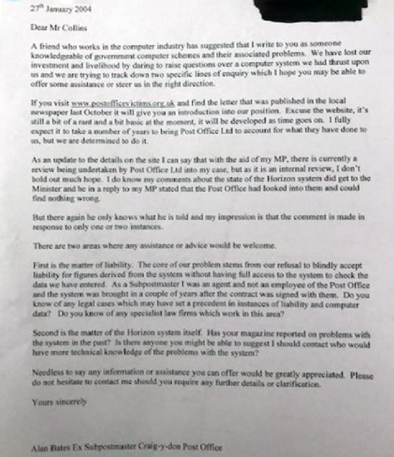

In 2007, Janet Skinner would plead guilty to false accounting and be sentenced to 9 months in jail. Janet had joined the Post Office in 1994, and due to her exemplary skill, would quickly rise to the role of a post mistress in Hull. She had no problems with her work, until the Horizon system was installed. The Horizon system was a software so the post office could link all its tills together, but it had some major bugs. Now, Janet Skinner’s totals were not adding up and her shortfalls had quickly risen to £59,000. She called investigators to help her work out where the money had gone, but in an unfortunate turn of events, she lost her shop and simply had to hope that pleading guilty to a crime she never committed would keep her out of jail. Ms Skinner stated, “I remember standing in the dock and the judge saying I was untrustworthy and stealing from pensioners”. The Post Office forced Ms Skinner to pay £11,000 as compensation. Fast-forward to 2021, and the courts have finally found her innocent, but she is still to be fully compensated.
Ms Skinner’s story is just one out of the 980 people who have been found guilty of false accounting because of the failures of this system. Sadly, it would cause many to have to remortgage their houses and many found themselves drowning in a sea of debt, as those who did not have tens of thousands of pounds lying around would face private prosecution in which the Post Office would investigate cases, not the police. Many of these people would become vilified by their communities. The lucky ones would have the community help them, such as Jo Hamilton in Hampshire, in which the community raised £9,000, to help with her £36,000 of debt. The unlucky were physically abused and would be shunned- some were even spat on by members of their community. Even the children of the falsely accused would be bullied for what their parents did not actually do. Sadly, of the 980 postmasters and sub postmasters accused of false accounting over the period of the allegations only 93 of the cases have been overturned by the courts and have had their names cleared of wrongdoing.
So far, the Post Office has given “Well over £1 million”- according to Professor Chris Hodgens, chair of the Horizon independent review board, however for many, lives to fallen apart, marriages collapsed, and the families of victims say that it has left them with health conditions such as depression, addiction and tragically, lives were cut short. So, although one million may sound like a lot, many of these people are unfairly still classed as criminals, and after having their livelihoods destroyed, the money is the least they can receive.
The Horizon system was and is still in service (although it has received numerous updates and is described to be at its most “robust” by the Post Office). The Horizon system was implemented to be easier than handling paper receipts, however its numeracy problems and hundreds of bugs would cause the system to cause 980 people to have their systems appear with gigantic shortfalls, all of which they had to pay back in full under contract. The company in charge of the Horizon system, Fujitsu, continue to be given large government contracts to this day.
The Post Office would spend £38 million on lawyers to defend the system, according to computer weekly, one of the first papers to call out the scandal: “The Post Office also sent people to prison to make an example of them. Former sub postmaster Seema Misra was prosecuted and sent to prison based on evidence from the Horizon system. After she was convicted, former Post Office head of criminal law Jarnail Singh wrote a celebratory email to colleagues, claiming this result would stop others from “jumping on the Horizon bashing bandwagon”.” They would also have the call centres tell people they were alone in having issues, even if this was not true. In 2021, the ex-boss of the Post Office would quit her job, citing her failing in the scandal.
In 2003, one sub postmaster from Lancashire blamed horizon for their shortfall issues, would call in an independent IT specialist to help in their case against the Post Office, for the IT specialist to point out several problems with the Horizon software. The Post Office knew that if this case got out it would show other post masters and postmistresses that they were not alone in having problems, and so the post office would pay of the sub postmaster and force them to sign a non-disclosure agreement so they could continue their campaign of civil and legal cases to chase up shortfalls.
However, the story would start to unravel, and justice would begin with a man known as Alan Bates. Mr Bates would write into computer weekly, as he was a victim of the Horizon. Mr Bates lost his job, in his Post Office in Wales and his life savings. Yet despite being crippled by this, he would spread the word to people in the Post Office that they were not the only people suffering problems with the system.

ABOVE: Mr Bates letter to computer weekly. Recently, the story has been turned into a documentary by ITV, in which it made light of the human impact on the post masters and mistresses and shows their road to justice. But this also raised the attention to the case and has vastly increased the public knowledge and has led for calls for justice for those accused and has increased the public pressure for the names to be cleared.
Now, a plan by the government to put through that would reverse the sentences of all those whom the Post Office would have found guilty of fraud, theft and false accounting is being considered. It is hoped that this legislation will be able to clear the names of all who have been forced to plead guilty by the Post Office, and so it is hoped that justice may finally come for those who have been dragged through twenty years of utter hell, still being called criminals for a crime they never committed. It is hoped the public pressure will force the government to implement laws to clear the postmasters and sub postmasters of wrongdoing.